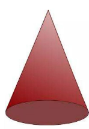

חרוט — דף מלווה המחשה
ציוד והנחיות בנייה
ציוד: פלסטלינה, קשיות השוות באורכן, מספרים, שמרדף, דף שבו מצוירים מעגלים.
• צרו מהפלסטלינה נחש, והניחו אותו על היקף המעגל.
• הניחו מספר קשיות כך שקצה אחד של הקשית יונח על שפת המעגל.
• חברו את כל הקצוות האחרים לנקודה אחת, ולאחר מכן חברו אותם עם כדור קטן של פלסטלינה.
שאלות התבוננות
1. מה קיבלתם?
רשמו בלוח המחיק מה מאפיין את הצורה שקיבלתם?
2. אילו חפצים אתם מכירים שנראים בצורה זו?
הצורה שקיבלתם נקראת חרוט.
3. א. תארו במילים שלכם איך יצרתם את החרוט?
ב. התבוננו בחרוטים שבנו חברי הקבוצה. כתבו אילו צורות הנדסיות בונות את החרוט?

נכתוב בכתיב מתמטי
• בסיס החרוט הוא — מעגל.
• הנקודה שבה נפגשים כל הקטעים (הקשיות) נקראת — קודקוד החרוט.
• קטע המחבר נקודה על המעגל אל קודקוד החרוט נקרא — הקו היוצר.
השלימו את הגדרת החרוט
חרוט הוא גוף תלת-מימדי הנוצר מחיבור נקודה שמחוץ למישור הבסיס עם כל נקודות המעגל שעל היקף הבסיס.
לבסיס צורת , ולחרוט קודקוד יחיד מחוץ למישור הבסיס.
כל הקטעים המחברים את שפת הבסיס לקודקוד נקראים ויוצרים את מעטפת החרוט.
האנך המורד מקודקוד החרוט אל מרכז הבסיס נקרא גובה החרוט.
שאלת חקר ודיון כיתתי: מה קובע את צורת החרוט?
אם נשתמש באותו מעגל פלסטלינה בבסיס אך נחליף את הקשיות לקשיות ארוכות יותר — מה ישתנה בחרוט (הגובה, שיפוע המעטפת) ומה יישאר ללא שינוי?